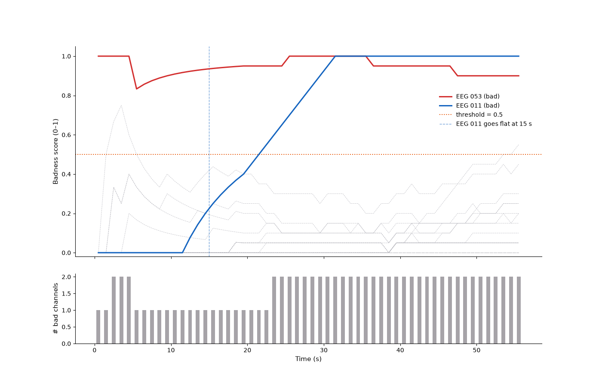

Note
Go to the end to download the full example code.
Real-time bad channel detection#
EEG and MEG recordings often contain disconnected, noisy, or poorly coupled
channels that contaminate downstream artifact correction and NF feature
extraction. BadChannelDetector evaluates independent
criteria per incoming window and uses a rolling majority-vote to flag
persistently bad channels — no baseline recording is needed.
This example uses the MNE sample dataset (60 EEG channels, 60 s), which
already contains one known bad channel (EEG 053). We also inject a
second artificially degraded channel so we can validate both detection paths.
The data is broadcast over a local LSL stream with
PlayerLSL and processed window-by-window as it
arrives through StreamLSL — the same pipeline used
in a live recording session.
Criteria used here:
"flat"— RMS below threshold (dead/disconnected electrode)."hf_noise"— abnormally high high-frequency power fraction (EMG, cable noise).EEG 053has an HF ratio ~4.5× above the median — the signature of this dataset’s known bad channel.
Note
The "variance" and "correlation" criteria are omitted because the
MNE sample EEG was recorded inside an MEG scanner. In that environment,
channel-to-channel amplitude spread and spatial neighbour correlation are
atypical, causing false positives on every channel. For standalone EEG
setups, enable all four criteria.
Load MNE sample EEG data and inject a flat channel#
We pick only EEG channels, un-mark the known bad so the detector must find it, and inject one additional artificial flat channel for a controlled validation.
import os
import tempfile
import time
import matplotlib.pyplot as plt
import mne
import numpy as np
from mne_rt.tools import BadChannelDetector
mne.set_log_level("WARNING")
sample_path = mne.datasets.sample.data_path()
raw_file = os.path.join(sample_path, "MEG", "sample", "sample_audvis_raw.fif")
raw = mne.io.read_raw_fif(raw_file, preload=True, verbose=False)
raw.pick_types(meg=False, eeg=True, stim=False, exclude=[])
raw.crop(tmin=0.0, tmax=60.0)
raw.filter(l_freq=1.0, h_freq=None, verbose=False)
KNOWN_BAD = "EEG 053"
INJECTED_BAD = raw.ch_names[10] # EEG 011
flat_start = 15.0
raw.info["bads"] = []
data = raw.get_data()
flat_idx = raw.ch_names.index(INJECTED_BAD)
data[flat_idx, int(flat_start * raw.info["sfreq"]):] = 0.0
raw._data = data
print(f"EEG channels : {len(raw.ch_names)}")
print(f"Known bad : {KNOWN_BAD}")
print(f"Injected flat : {INJECTED_BAD} (flat from t = {flat_start:.0f} s)")
EEG channels : 60
Known bad : EEG 053
Injected flat : EEG 011 (flat from t = 15 s)
Configure the detector#
hf_threshold=6.0 (conservative robust z-score) flags only the genuinely
anomalous HF content of EEG 053 while leaving all clean channels alone.
sfreq = round(raw.info["sfreq"])
chunk_size = sfreq # 1-second windows
detector = BadChannelDetector(
raw.info,
method=["flat", "hf_noise"],
flat_threshold=1e-8,
hf_threshold=6.0,
history_windows=20,
min_bad_frac=0.6,
)
Stream via PlayerLSL and detect bad channels in real time#
PlayerLSL broadcasts the injected recording at its
native sampling rate over a local LSL stream.
StreamLSL consumes it in 1-second windows —
exactly the same data path used in a live NF session.
from mne_lsl.player import PlayerLSL
from mne_lsl.stream import StreamLSL
STREAM_NAME = "ANT_BadCh_demo"
SOURCE_ID = STREAM_NAME # unique source_id avoids conflicts with other running streams
with tempfile.NamedTemporaryFile(suffix="_raw.fif", delete=False) as _f:
_tmp_path = _f.name
raw.save(_tmp_path, overwrite=True, verbose=False)
score_history = {ch: [] for ch in raw.ch_names}
bad_per_window = []
window_times = []
player = PlayerLSL(_tmp_path, chunk_size=chunk_size, name=STREAM_NAME,
source_id=SOURCE_ID, n_repeat=1)
player.start()
time.sleep(2.0)
stream = StreamLSL(bufsize=4.0, source_id=SOURCE_ID)
stream.connect(acquisition_delay=0.005, timeout=15.0)
print(f"Streaming: {STREAM_NAME} | sfreq={stream.info['sfreq']:.0f} Hz | "
f"n_ch={stream.info['nchan']}")
n_chunks = int(raw.times[-1]) # 60 one-second windows
t_deadline = time.perf_counter() + raw.times[-1] + 15.0
k = 0
while k < n_chunks and time.perf_counter() < t_deadline:
if stream.n_new_samples < chunk_size:
time.sleep(0.005)
continue
chunk, _ = stream.get_data(winsize=1.0)
bad = detector.update(chunk)
bad_per_window.append(list(bad))
window_times.append(k + 0.5)
for ch, sc in detector.scores_.items():
score_history[ch].append(sc)
k += 1
stream.disconnect()
try:
player.stop()
except RuntimeError:
pass
os.unlink(_tmp_path)
print(f"Processed {k} windows via LSL streaming")
Streaming: ANT_BadCh_demo | sfreq=601 Hz | n_ch=60
Processed 56 windows via LSL streaming
Detected bad channels#
final_bad = detector.get_bad_channels()
print(f"\nDetected bad channels : {final_bad}")
print(f"Known bad : {KNOWN_BAD} → {'✓ found' if KNOWN_BAD in final_bad else '✗ missed'}")
print(f"Injected bad: {INJECTED_BAD} → {'✓ found' if INJECTED_BAD in final_bad else '✗ missed'}")
Detected bad channels : ['EEG 011', 'EEG 053']
Known bad : EEG 053 → ✓ found
Injected bad: EEG 011 → ✓ found
Figure 1 — Badness score over time#
Each line is one EEG channel’s rolling badness score (0 = never bad, 1 = always bad in recent windows). The two bad channels climb above the 0.5 decision threshold while all others stay near zero.
fig1, (ax_scores, ax_flag) = plt.subplots(
2, 1, figsize=(14, 9), sharex=True,
gridspec_kw={"hspace": 0.12, "height_ratios": [3, 1]},
)
score_arr = np.array([score_history[ch] for ch in raw.ch_names])
for i, ch in enumerate(raw.ch_names):
if ch in (KNOWN_BAD, INJECTED_BAD):
continue
ax_scores.plot(window_times, score_arr[i], color="#b0b0b8", lw=0.6, alpha=0.8, ls="--")
for ch, color, ls in [(KNOWN_BAD, "#D32F2F", "-"), (INJECTED_BAD, "#1565C0", "--")]:
if ch in raw.ch_names:
i = raw.ch_names.index(ch)
ax_scores.plot(window_times, score_arr[i], color=color, lw=2.2,
label=f"{ch} (bad)", zorder=5)
ax_scores.axhline(0.5, color="#E65100", lw=1.4, ls=":", label="threshold = 0.5")
ax_scores.axvline(flat_start, color="#1565C0", lw=1.0, ls="--", alpha=0.6,
label=f"{INJECTED_BAD} goes flat at {flat_start:.0f} s")
ax_scores.set_ylabel("Badness score (0–1)", fontsize=11)
ax_scores.set_ylim(-0.02, 1.05)
ax_scores.legend(fontsize=10, frameon=False, bbox_to_anchor=(0.99, 0.8))
ax_scores.spines[["top", "right"]].set_visible(False)
n_bad_ts = [len(b) for b in bad_per_window]
ax_flag.bar(window_times, n_bad_ts, width=0.5, color="#908C92", alpha=0.8)
ax_flag.set_ylabel("# bad channels", fontsize=11)
ax_flag.set_xlabel("Time (s)", fontsize=11)
ax_flag.spines[["top", "right"]].set_visible(False)
fig1.tight_layout()

/home/runner/work/mne-rt/mne-rt/examples/ex_bad_channel_detection.py:200: UserWarning: This figure includes Axes that are not compatible with tight_layout, so results might be incorrect.
fig1.tight_layout()
Total running time of the script: (1 minutes 19.184 seconds)